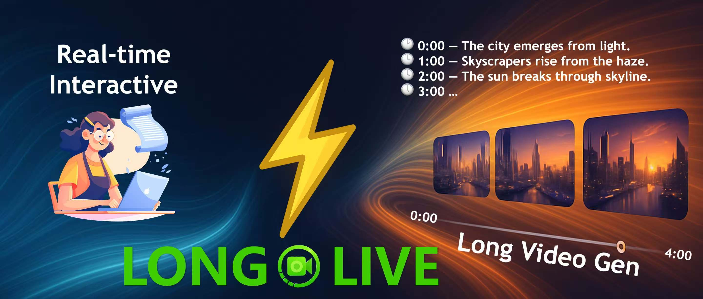
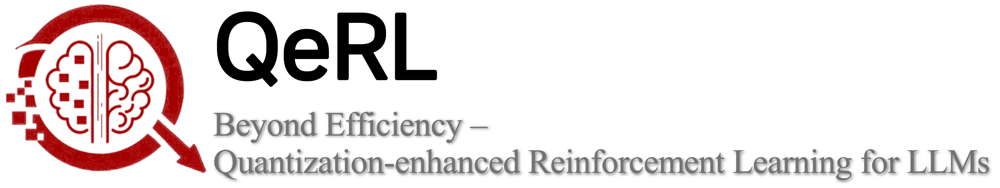
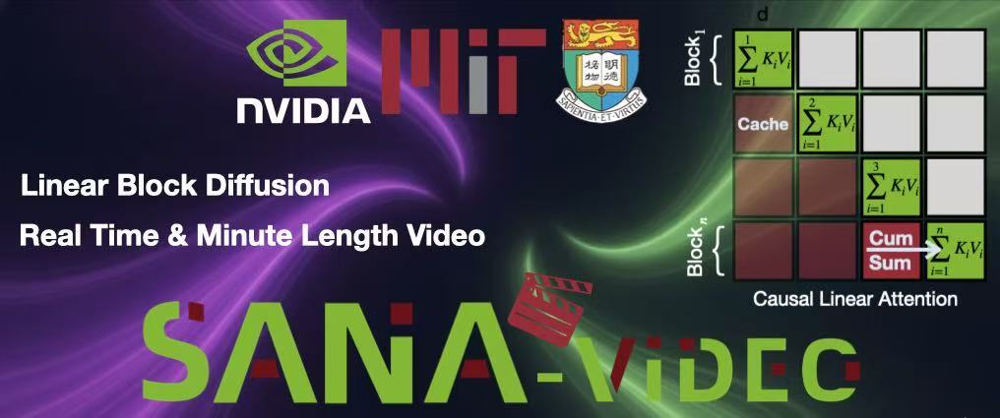
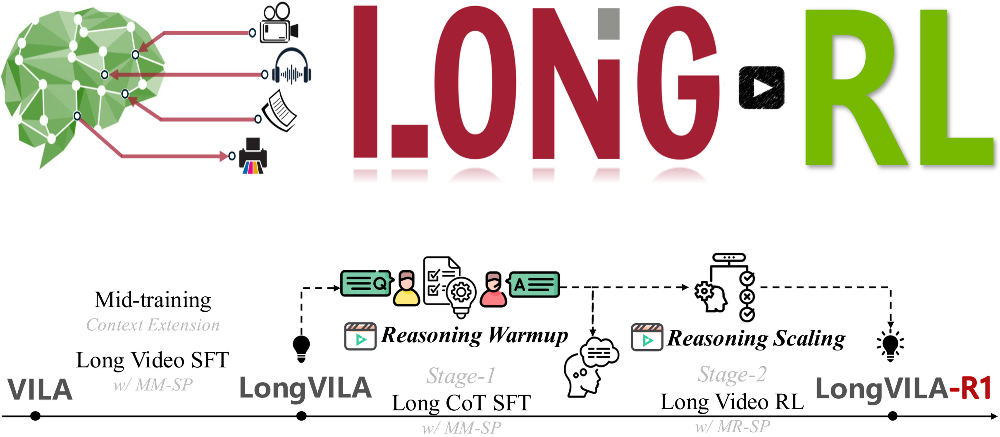
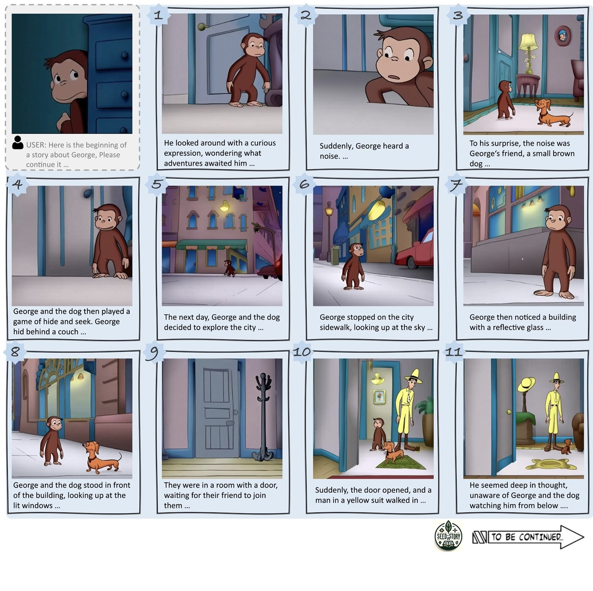
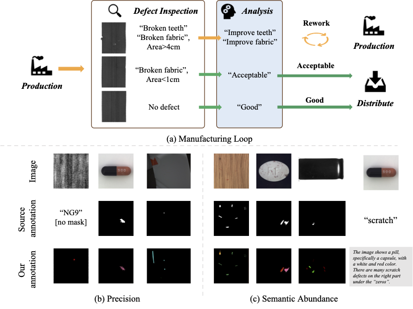
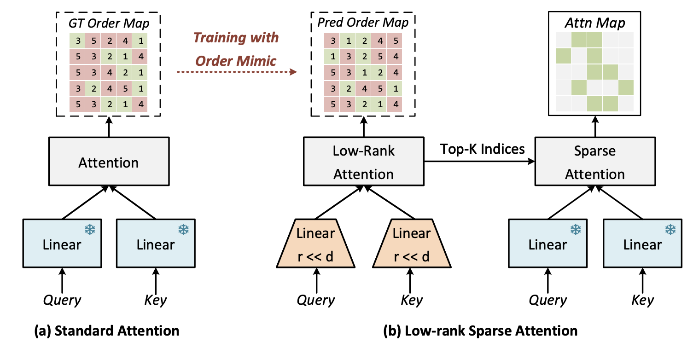
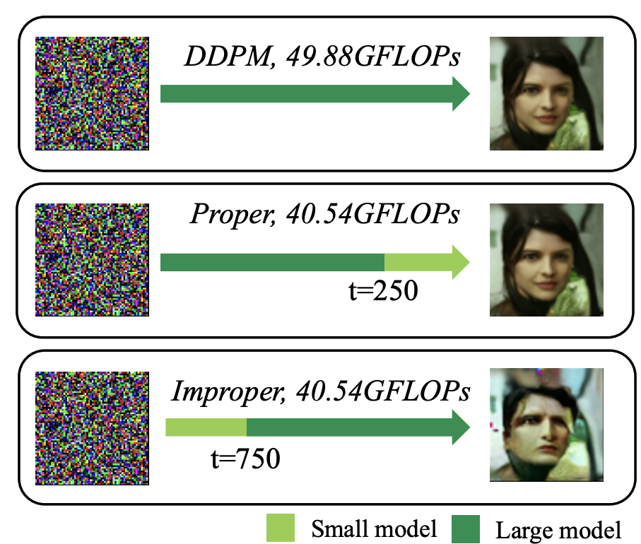
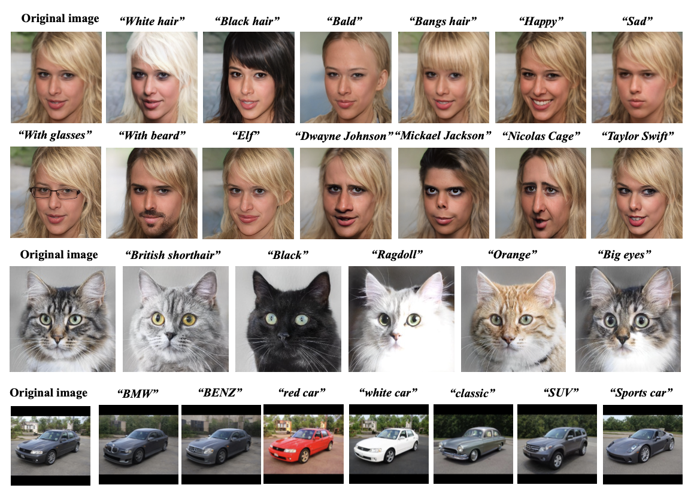

LongLive: Real-time Interactive Long Video Generation
International Conference on Learning Representations (ICLR), 2026
Huggingface Daily Paper Top1, Huggingface Weekly Paper Top2, Huggingface Monthly Paper Top8
Hello! I am a Research Scientist at NVIDIA Research, where I work with Prof. Song Han. My research centers on efficient generative models, with the goal of making them more scalable, practical, and accessible. I received my Ph.D. from The Hong Kong University of Science and Technology (Guangzhou), where I was advised by Prof. Yingcong Chen. Before that, I earned my Bachelor's degree from the School of Computer Science and Engineering at Beihang University. I have also been fortunate to work closely with Dr. Yukang Chen.
*: Equal Contribution · Google Scholar

International Conference on Learning Representations (ICLR), 2026
Huggingface Daily Paper Top1, Huggingface Weekly Paper Top2, Huggingface Monthly Paper Top8

International Conference on Learning Representations (ICLR), 2026

International Conference on Learning Representations (ICLR), 2026

Conference on Neural Information Processing Systems (NeurIPS), 2025

arXiv preprint
Huggingface Daily Paper

European Conference on Computer Vision (ECCV), 2024

IEEE/CVF Conference on Computer Vision and Pattern Recognition (CVPR), 2024

International Conference on Learning Representations (ICLR) 2024

IEEE/CVF International Conference on Computer Vision (ICCV), 2023
| Postgraduate Scholarship, HKUST(GZ) | 2022 - 2026 |
| 1st place on the challenge of the Third Workshop on Neural Architecture Search (NAS), CVPR2022 | 2022 |
| Distinguished Graduate, School of Computer Science and Engineering, BUAA | 2020 |
| Undergraduate Research Scholarship, BUAA | 2019 |
Conference Reviewer:
| AIAA5023 Introduction to Computer Vision, HKUST(GZ) | 2023-2024 |
| AIAA5045 Medical Imaging, HKUST(GZ) | 2023-2024 |
| Principles of Computer Composition, BUAA | 2018-2019 |
| C Programing, BUAA | 2017-2018 |